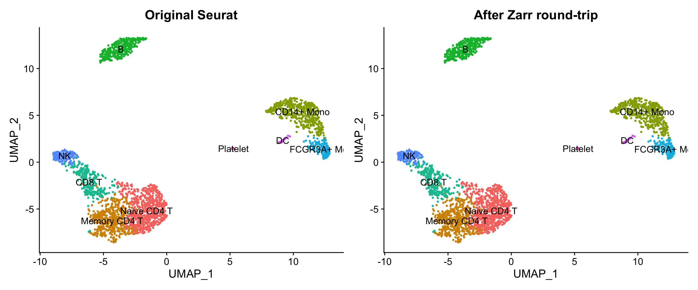
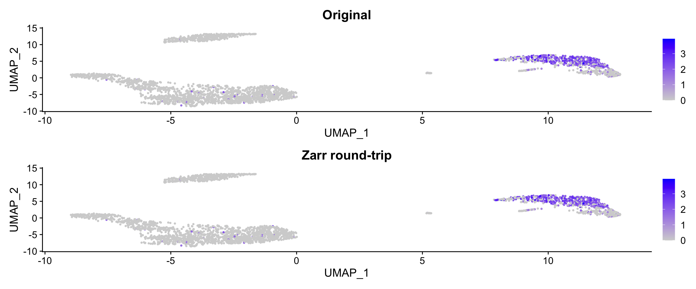
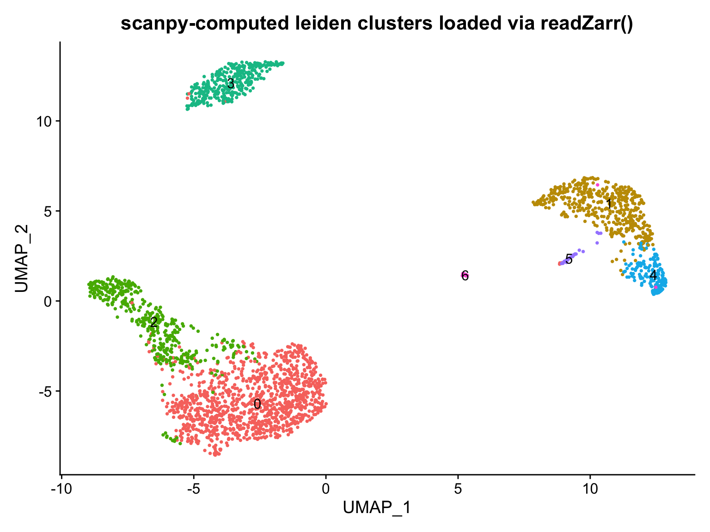
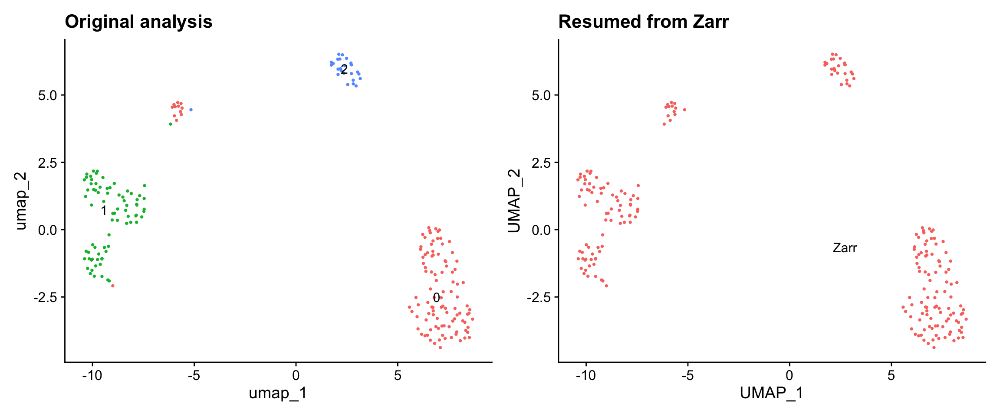
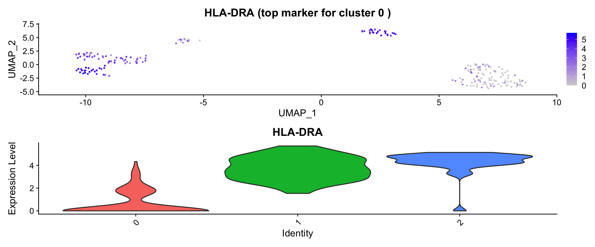
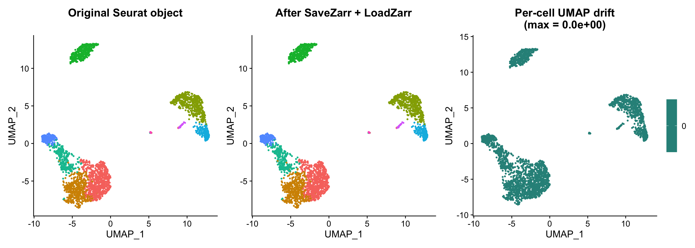
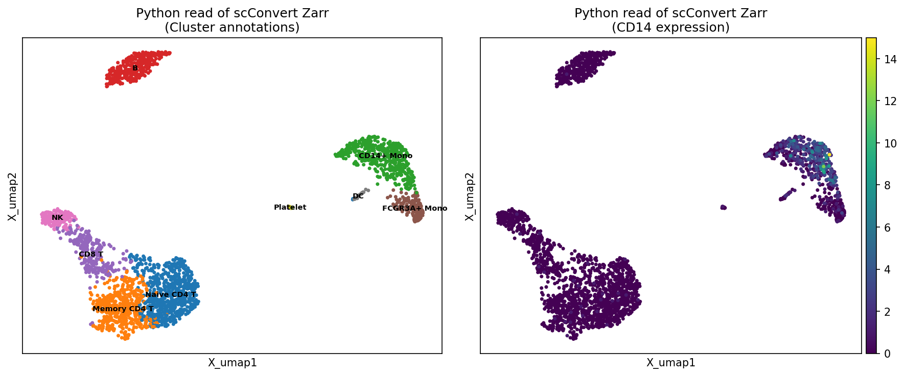

This vignette demonstrates how to convert between Seurat objects and Zarr stores using scConvert. Zarr is a chunked, compressed N-dimensional array format commonly used in cloud-native single-cell workflows, including CELLxGENE Census, SpatialData, and the Human Cell Atlas.
scConvert reads and writes Zarr v2 stores following the AnnData
on-disk specification, with no Python dependency. Zarr stores
produced by writeZarr() are directly readable by Python
anndata.read_zarr() and scanpy.
Seurat to Zarr
Basic conversion
To save a Seurat object as a Zarr store, use writeZarr()
directly or scConvert() with the .zarr
extension:
library(SeuratData)
if (!"pbmc3k.final" %in% rownames(InstalledData())) {
InstallData("pbmc3k")
}
data("pbmc3k.final", package = "pbmc3k.SeuratData")
pbmc <- UpdateSeuratObject(pbmc3k.final)
cat("Input:", ncol(pbmc), "cells x", nrow(pbmc), "genes\n")
#> Input: 2638 cells x 13714 genes
cat("Reductions:", paste(Reductions(pbmc), collapse = ", "), "\n")
#> Reductions: pca, umap
cat("Layers:", paste(Layers(pbmc), collapse = ", "), "\n")
#> Layers: counts, data, scale.data
# Direct API
writeZarr(pbmc, "pbmc3k.zarr", overwrite = TRUE)
# Or via scConvert()
# scConvert(pbmc, dest = "pbmc3k.zarr", overwrite = TRUE)writeZarr() writes the following components:
| Seurat Source | Zarr Destination | Description |
|---|---|---|
GetAssayData(layer = "counts") |
X/ |
Primary expression matrix (prefers counts) |
GetAssayData(layer = "data") |
layers/data/ |
Normalized data (if different from counts) |
meta.data |
obs/ |
Cell metadata with categorical encoding |
| Assay feature metadata | var/ |
Gene-level annotations |
Embeddings(, "pca") |
obsm/X_pca/ |
PCA coordinates |
Embeddings(, "umap") |
obsm/X_umap/ |
UMAP coordinates |
Graphs(, "RNA_snn") |
obsp/connectivities/ |
SNN graph (sparse CSR) |
Graphs(, "RNA_nn") |
obsp/distances/ |
NN distance graph |
Misc() |
uns/ |
Unstructured annotations |
Zarr store structure
The Zarr store is a directory tree following AnnData v0.1.0 conventions:
pbmc3k.zarr/
├── .zgroup # Root group metadata
├── .zattrs # encoding-type: anndata, encoding-version: 0.1.0
├── X/ # Expression matrix (sparse CSR or dense)
│ ├── .zattrs # encoding-type: csr_matrix / array
│ ├── data/ # Non-zero values
│ ├── indices/ # Column indices (0-based)
│ └── indptr/ # Row pointers
├── obs/ # Cell metadata
│ ├── .zattrs # encoding-type: dataframe, column-order
│ ├── _index/ # Cell barcodes (string-array)
│ ├── seurat_clusters/ # Categorical: codes/ + categories/
│ └── nCount_RNA/ # Numeric array
├── var/ # Feature metadata
│ ├── _index/ # Gene names
│ └── ...
├── obsm/ # Dimensional reductions
│ ├── X_pca/ # [n_cells, n_components] dense array
│ └── X_umap/ # [n_cells, 2] dense array
└── obsp/ # Pairwise cell annotations (graphs)
├── connectivities/ # SNN graph (sparse)
└── distances/ # NN distance graph (sparse)Zarr to Seurat
Loading a Zarr store
Use readZarr() to read a Zarr store into a Seurat
object:
obj <- readZarr("pbmc3k.zarr", verbose = TRUE)
cat("Loaded:", ncol(obj), "cells x", nrow(obj), "genes\n")
#> Loaded: 2638 cells x 13714 genes
cat("Reductions:", paste(Reductions(obj), collapse = ", "), "\n")
#> Reductions: pca, umap
cat("Metadata columns:", paste(colnames(obj[[]]), collapse = ", "), "\n")
#> Metadata columns: orig.ident, nCount_RNA, nFeature_RNA, seurat_annotations, percent.mt, RNA_snn_res.0.5, seurat_clustersreadZarr() maps AnnData fields to Seurat:
| Zarr Source | Seurat Destination | Notes |
|---|---|---|
X/ |
Default assay counts/data | Sparse CSR or dense |
layers/* |
Additional assay layers | Via AnnDataLayerToSeurat() mapping |
obs/ |
meta.data |
Categoricals become factors |
var/ |
Feature metadata |
highly_variable → VariableFeatures()
|
obsm/X_pca |
reductions$pca |
Smart transpose handling |
obsm/X_umap |
reductions$umap |
Smart transpose handling |
obsp/connectivities |
graphs$RNA_snn |
Sparse matrix |
obsp/distances |
graphs$RNA_nn |
Sparse matrix |
varp/* |
misc[["__varp__"]] |
Pairwise variable annotations |
uns/* |
misc |
Best-effort for strings/numerics |
Alternative: scConvert()
scConvert() also works with Zarr — it auto-detects the
format from the file extension:
# Convert from other formats to zarr
scConvert("data.h5ad", dest = "data.zarr", overwrite = TRUE)
scConvert("data.rds", dest = "data.zarr", overwrite = TRUE)
scConvert("data.loom", dest = "data.zarr", overwrite = TRUE)
# Direct converters (streaming by default, no Seurat intermediate)
H5ADToZarr("data.h5ad", "data.zarr", overwrite = TRUE)
ZarrToH5AD("data.zarr", "output.h5ad", overwrite = TRUE)
H5SeuratToZarr("data.h5seurat", "data.zarr", overwrite = TRUE)
ZarrToH5Seurat("data.zarr", "data.h5seurat", overwrite = TRUE)
# Convert via Seurat hub (any format pair)
scConvert("data.zarr", dest = "data.rds", overwrite = TRUE)
scConvert("data.zarr", dest = "data.loom", overwrite = TRUE)
# scConvert_cli() auto-dispatches to the best path
scConvert_cli("data.h5ad", "data.zarr", overwrite = TRUE)Streaming conversion
The direct converters (H5ADToZarr,
ZarrToH5AD, H5SeuratToZarr,
ZarrToH5Seurat) use streaming by default
(stream = TRUE). This copies AnnData fields (X, obs, var,
obsm, obsp, layers, uns, varp, raw) directly between backends without
materializing a Seurat object in memory.
Streaming conversion:
- Avoids loading all data into R memory — matrices are read and written one field at a time
- Preserves the exact data layout — no lossy conversion through Seurat
-
Handles all AnnData components including
raw/(pre-filtering data),varp(gene-gene matrices), and complex categorical metadata - Translates format conventions automatically — h5seurat factor encoding (levels/values, 1-based) ↔︎ AnnData categoricals (categories/codes, 0-based), sparse matrix orientation (CSC genes×cells ↔︎ CSR cells×genes)
Set stream = FALSE to fall back to the Seurat hub
path:
# Streaming (default): direct field-by-field copy
H5ADToZarr("large_dataset.h5ad", "large_dataset.zarr")
# Hub path: load as Seurat, then save (stream = FALSE)
H5ADToZarr("data.h5ad", "data.zarr", stream = FALSE)
# scConvert_cli uses streaming automatically for zarr pairs
scConvert_cli("data.h5seurat", "data.zarr")
scConvert_cli("data.zarr", "output.h5ad")Visualizing Zarr round-trip data
After converting to Zarr and loading back, the UMAP coordinates, cluster labels, and expression values are preserved exactly:
p1 <- DimPlot(pbmc, reduction = "umap", group.by = "seurat_annotations",
label = TRUE, pt.size = 0.5) +
ggtitle("Original Seurat") + NoLegend()
p2 <- DimPlot(obj, reduction = "umap", group.by = "seurat_annotations",
label = TRUE, pt.size = 0.5) +
ggtitle("After Zarr round-trip") + NoLegend()
p1 + p2
Expression patterns are also preserved:
p1 <- FeaturePlot(pbmc, features = "CD14", pt.size = 0.5) +
ggtitle("Original")
p2 <- FeaturePlot(obj, features = "CD14", pt.size = 0.5) +
ggtitle("Zarr round-trip")
p1 + p2
Python interoperability
Zarr stores written by writeZarr() are directly readable
by Python’s anndata.read_zarr() and scanpy. No intermediate
conversion needed.
Reading scConvert Zarr in Python
import anndata as ad
import scanpy as sc
adata = ad.read_zarr("pbmc3k.zarr")
print(adata)
#> AnnData object with n_obs × n_vars = 2638 × 13714
#> obs: 'orig.ident', 'nCount_RNA', 'nFeature_RNA', 'seurat_annotations', 'percent.mt', 'RNA_snn_res.0.5', 'seurat_clusters'
#> var: 'vst.mean', 'vst.variance', 'vst.variance.expected', 'vst.variance.standardized', 'vst.variable'
#> obsm: 'X_pca', 'X_umap'
#> layers: 'scaled', 'data'
#> obsp: 'connectivities', 'distances'
print(f"Embeddings: {list(adata.obsm.keys())}")
#> Embeddings: ['X_pca', 'X_umap']
print(f"Graphs: {list(adata.obsp.keys())}")
#> Graphs: ['connectivities', 'distances']Visualizing in scanpy
import scanpy as sc
import matplotlib.pyplot as plt
import anndata as ad
adata = ad.read_zarr("pbmc3k.zarr")
fig, axes = plt.subplots(1, 2, figsize=(12, 5))
sc.pl.embedding(adata, basis="X_umap", color="seurat_annotations",
title="scConvert Zarr in scanpy\n(cluster annotations)",
ax=axes[0], show=False, legend_loc="on data", legend_fontsize=7)
sc.pl.embedding(adata, basis="X_umap", color="CD14",
title="scConvert Zarr in scanpy\n(CD14 expression)",
ax=axes[1], show=False, use_raw=False)
plt.tight_layout()
plt.savefig("pbmc_zarr_scanpy.png", dpi=150, bbox_inches="tight")
plt.close()Reading Python-generated Zarr in R
Zarr stores created by scanpy or anndata are readable by
readZarr(). Note that Python’s default compressor is blosc
(not zlib), so reading Python-generated zarr stores requires the blosc R package:
import scanpy as sc
import anndata as ad
# Process a dataset in scanpy
adata = ad.read_zarr("pbmc3k.zarr")
sc.pp.neighbors(adata, use_rep="X_pca", n_neighbors=15)
sc.tl.leiden(adata, resolution=0.8)
# Write back to zarr
adata.write_zarr("from_scanpy.zarr")
print(f"Wrote zarr with leiden clusters: {adata.obs['leiden'].nunique()} clusters")
#> Wrote zarr with leiden clusters: 7 clusters
# Load the scanpy-generated zarr store in R
obj_scanpy <- readZarr("from_scanpy.zarr", verbose = TRUE)
cat("Cells:", ncol(obj_scanpy), "| Genes:", nrow(obj_scanpy), "\n")
#> Cells: 2638 | Genes: 13714
cat("Metadata:", paste(colnames(obj_scanpy[[]]), collapse = ", "), "\n")
#> Metadata: orig.ident, nCount_RNA, nFeature_RNA, seurat_annotations, percent.mt, RNA_snn_res.0.5, seurat_clusters, leiden
cat("Leiden clusters:", nlevels(obj_scanpy[["leiden", drop = TRUE]]), "\n")
#> Leiden clusters: 7
DimPlot(obj_scanpy, reduction = "umap", group.by = "leiden",
label = TRUE, pt.size = 0.5) +
ggtitle("scanpy-computed leiden clusters loaded via readZarr()") +
NoLegend()
Seurat analysis with Zarr storage
Zarr can serve as the persistent storage format for a Seurat analysis workflow. This section demonstrates a complete pipeline: loading data, running standard Seurat analysis, saving checkpoints to Zarr, and resuming from saved state.
Starting from an h5ad file
Many public datasets (CELLxGENE, HCA) distribute data as h5ad or zarr. Here we start from the shipped test h5ad and run a standard Seurat pipeline:
library(scConvert)
library(Seurat)
# Load from h5ad
h5ad_path <- system.file("testdata", "pbmc_small.h5ad", package = "scConvert")
pbmc_wf <- readH5AD(h5ad_path, verbose = FALSE)
cat("Loaded:", ncol(pbmc_wf), "cells x", nrow(pbmc_wf), "genes\n")
#> Loaded: 214 cells x 2000 genes
cat("Layers:", paste(Layers(pbmc_wf), collapse = ", "), "\n")
#> Layers: counts, data
cat("Reductions:", paste(Reductions(pbmc_wf), collapse = ", "), "\n")
#> Reductions: pca, umapRunning Seurat analysis
The loaded object has counts and normalized data from scanpy. We can run Seurat’s standard pipeline on top:
# Variable features, scaling, PCA
pbmc_wf <- FindVariableFeatures(pbmc_wf, verbose = FALSE)
pbmc_wf <- ScaleData(pbmc_wf, verbose = FALSE)
pbmc_wf <- RunPCA(pbmc_wf, verbose = FALSE)
# Clustering
pbmc_wf <- FindNeighbors(pbmc_wf, dims = 1:20, verbose = FALSE)
pbmc_wf <- FindClusters(pbmc_wf, resolution = 0.5, verbose = FALSE)
# UMAP
pbmc_wf <- RunUMAP(pbmc_wf, dims = 1:20, verbose = FALSE)
cat("Clusters:", nlevels(pbmc_wf$seurat_clusters), "\n")
#> Clusters: 3
cat("Reductions:", paste(Reductions(pbmc_wf), collapse = ", "), "\n")
#> Reductions: pca, umap
cat("Graphs:", paste(names(pbmc_wf@graphs), collapse = ", "), "\n")
#> Graphs: RNA_nn, RNA_snnSaving analysis state to Zarr
Save the full analysis state — expression data, metadata, PCA, UMAP, clusters, and neighbor graphs — to a Zarr store:
writeZarr(pbmc_wf, "analysis_checkpoint.zarr", overwrite = TRUE, verbose = FALSE)
# Verify the store is valid
cat("Zarr store size:", sum(file.info(
list.files("analysis_checkpoint.zarr", recursive = TRUE, full.names = TRUE)
)$size) / 1024, "KB\n")
#> Zarr store size: 1001.415 KBResuming from Zarr checkpoint
Load the checkpoint and verify the full analysis state is preserved:
resumed <- readZarr("analysis_checkpoint.zarr", verbose = FALSE)
cat("Cells:", ncol(resumed), "| Genes:", nrow(resumed), "\n")
#> Cells: 214 | Genes: 2000
cat("Clusters:", nlevels(resumed$seurat_clusters), "\n")
#> Clusters: 3
cat("Reductions:", paste(Reductions(resumed), collapse = ", "), "\n")
#> Reductions: pca, umap
cat("Graphs:", paste(names(resumed@graphs), collapse = ", "), "\n")
#> Graphs: RNA_snn, RNA_nn
# Verify PCA is exact
stopifnot(max(abs(
Embeddings(pbmc_wf, "pca")[colnames(resumed), ] -
Embeddings(resumed, "pca")
)) < 1e-10)
cat("PCA: exact match\n")
#> PCA: exact match
# Verify clusters match
stopifnot(identical(
as.character(pbmc_wf$seurat_clusters[colnames(resumed)]),
as.character(resumed$seurat_clusters)
))
cat("Cluster assignments: exact match\n")
#> Cluster assignments: exact matchVisualization from Zarr checkpoint
library(ggplot2)
library(patchwork)
p1 <- DimPlot(pbmc_wf, reduction = "umap", label = TRUE, pt.size = 0.5) +
ggtitle("Original analysis") + NoLegend()
p2 <- DimPlot(resumed, reduction = "umap", label = TRUE, pt.size = 0.5) +
ggtitle("Resumed from Zarr") + NoLegend()
p1 + p2
Continued analysis from checkpoint
After loading from Zarr, you can continue the analysis — find markers, subset clusters, or add new annotations. Note that cell identities need to be set explicitly after loading (Zarr doesn’t store R’s active identity class):
# Set cluster identities from saved metadata
Idents(resumed) <- "seurat_clusters"
# Find markers for the first cluster
first_cluster <- levels(Idents(resumed))[1]
markers_c0 <- FindMarkers(resumed, ident.1 = first_cluster, verbose = FALSE)
cat("Top 5 markers for cluster", first_cluster, ":\n")
#> Top 5 markers for cluster 0 :
print(head(markers_c0[order(markers_c0$p_val_adj), ], 5))
#> p_val avg_log2FC pct.1 pct.2 p_val_adj
#> HLA-DRA 5.184691e-34 -4.452142 0.295 0.990 1.036938e-30
#> HLA-DRB1 4.940796e-29 -3.841615 0.223 0.922 9.881592e-26
#> CD74 1.038005e-27 -3.299494 0.768 0.971 2.076009e-24
#> HLA-DPB1 3.384846e-26 -3.886235 0.312 0.902 6.769693e-23
#> HLA-DPA1 3.489910e-26 -4.184216 0.250 0.873 6.979819e-23
# Save updated object with marker results
resumed[["has_markers"]] <- TRUE
writeZarr(resumed, "analysis_with_markers.zarr", overwrite = TRUE, verbose = FALSE)
cat("\nSaved updated analysis to Zarr\n")
#>
#> Saved updated analysis to Zarr
top_gene <- rownames(markers_c0)[which.min(markers_c0$p_val_adj)]
p1 <- FeaturePlot(resumed, features = top_gene, pt.size = 0.5) +
ggtitle(paste(top_gene, "(top marker for cluster", first_cluster, ")"))
p2 <- VlnPlot(resumed, features = top_gene, pt.size = 0) +
NoLegend()
p1 + p2
Cross-ecosystem workflow
A common pattern is to process data in scanpy, save to Zarr, then load in Seurat for downstream analysis (or vice versa):
# Step 1: Load scanpy-processed zarr from a collaborator
obj <- readZarr("scanpy_analysis.zarr")
# Step 2: Continue analysis in Seurat
obj <- FindVariableFeatures(obj, verbose = FALSE)
obj <- ScaleData(obj, verbose = FALSE)
obj <- RunPCA(obj, verbose = FALSE)
obj <- FindNeighbors(obj, dims = 1:30, verbose = FALSE)
obj <- FindClusters(obj, resolution = 0.8, verbose = FALSE)
# Step 3: Save back to zarr for the Python side
writeZarr(obj, "seurat_analysis.zarr", overwrite = TRUE)
# Or convert to h5ad for scanpy
scConvert("seurat_analysis.zarr", dest = "seurat_analysis.h5ad", overwrite = TRUE)Conversion fidelity
This section verifies exact data preservation through Zarr round-trips.
Seurat to Zarr to Seurat
# --- Dimensions ---
stopifnot(ncol(obj) == ncol(pbmc))
stopifnot(nrow(obj) == nrow(pbmc))
cat("Dimensions:", ncol(obj), "cells x", nrow(obj), "genes -- OK\n")
#> Dimensions: 2638 cells x 13714 genes -- OK
# --- Barcodes and features ---
stopifnot(identical(sort(colnames(obj)), sort(colnames(pbmc))))
stopifnot(identical(sort(rownames(obj)), sort(rownames(pbmc))))
cat("Barcodes and features: exact match\n")
#> Barcodes and features: exact match
# --- Metadata preservation ---
cat("\nMetadata column checks:\n")
#>
#> Metadata column checks:
for (col in colnames(pbmc[[]])) {
if (!col %in% colnames(obj[[]])) {
cat(sprintf(" %-25s MISSING\n", col))
next
}
orig <- pbmc[[col, drop = TRUE]]
loaded <- obj[[col, drop = TRUE]]
orig_class <- class(orig)[1]
load_class <- class(loaded)[1]
status <- "OK"
if (is.numeric(orig) && is.numeric(loaded)) {
vals_match <- isTRUE(all.equal(
orig[colnames(obj)], loaded, tolerance = 1e-6
))
if (!vals_match) status <- "MISMATCH"
stopifnot(vals_match)
} else if (is.factor(orig) && is.factor(loaded)) {
stopifnot(identical(sort(levels(orig)), sort(levels(loaded))))
}
cat(sprintf(" %-25s %-10s -> %-10s %s\n", col, orig_class, load_class, status))
}
#> orig.ident factor -> factor OK
#> nCount_RNA numeric -> numeric OK
#> nFeature_RNA integer -> integer OK
#> seurat_annotations factor -> factor OK
#> percent.mt numeric -> numeric OK
#> RNA_snn_res.0.5 factor -> factor OK
#> seurat_clusters factor -> factor OKPCA and UMAP preservation
# PCA: exact component match
pca_orig <- Embeddings(pbmc, "pca")[colnames(obj), ]
pca_loaded <- Embeddings(obj, "pca")
pca_diff <- max(abs(pca_orig - pca_loaded))
stopifnot(pca_diff < 1e-10)
cat("PCA:", ncol(pca_loaded), "components, max diff =", pca_diff, "\n")
#> PCA: 50 components, max diff = 0
# UMAP: exact match
umap_orig <- Embeddings(pbmc, "umap")[colnames(obj), ]
umap_loaded <- Embeddings(obj, "umap")
umap_diff <- max(abs(umap_orig - umap_loaded))
stopifnot(umap_diff < 1e-10)
cat("UMAP: max diff =", umap_diff, "\n")
#> UMAP: max diff = 0Expression values
# Compare counts (exact)
counts_orig <- GetAssayData(pbmc, layer = "counts")
counts_loaded <- GetAssayData(obj, layer = "counts")
# Align by common barcodes/features
common_cells <- intersect(colnames(counts_orig), colnames(counts_loaded))
common_genes <- intersect(rownames(counts_orig), rownames(counts_loaded))
diff <- max(abs(
counts_orig[common_genes, common_cells] -
counts_loaded[common_genes, common_cells]
))
stopifnot(diff == 0)
cat("Counts: exact match (", length(common_genes), "genes x",
length(common_cells), "cells)\n")
#> Counts: exact match ( 13714 genes x 2638 cells)
# Compare data layer if available
if ("data" %in% Layers(obj)) {
data_orig <- GetAssayData(pbmc, layer = "data")
data_loaded <- GetAssayData(obj, layer = "data")
diff_data <- max(abs(
data_orig[common_genes, common_cells] -
data_loaded[common_genes, common_cells]
))
stopifnot(diff_data < 1e-6)
cat("Data layer: max diff =", diff_data, "\n")
}
#> Data layer: max diff = 0Neighbor graph preservation
for (g in names(pbmc@graphs)) {
if (!g %in% names(obj@graphs)) {
cat(g, ": not in zarr output (expected for some graph types)\n")
next
}
g_orig <- pbmc@graphs[[g]]
g_loaded <- obj@graphs[[g]]
common <- intersect(rownames(g_orig), rownames(g_loaded))
diff <- max(abs(g_orig[common, common] - g_loaded[common, common]))
stopifnot(diff == 0)
cat(g, ": exact match (nnz =", length(g_loaded@x), ")\n")
}
#> RNA_nn : exact match (nnz = 52760 )
#> RNA_snn : exact match (nnz = 194704 )Full round-trip: h5ad to Zarr to h5ad
# Start from the shipped test h5ad
h5ad_src <- system.file("testdata", "pbmc_small.h5ad", package = "scConvert")
ref <- readH5AD(h5ad_src, verbose = FALSE)
# h5ad -> Seurat -> Zarr
writeZarr(ref, "roundtrip.zarr", overwrite = TRUE, verbose = FALSE)
# Zarr -> Seurat
rt <- readZarr("roundtrip.zarr", verbose = FALSE)
# Verify
stopifnot(ncol(rt) == ncol(ref))
stopifnot(nrow(rt) == nrow(ref))
stopifnot(identical(sort(colnames(rt)), sort(colnames(ref))))
stopifnot(identical(sort(rownames(rt)), sort(rownames(ref))))
# PCA
pca_ref <- Embeddings(ref, "pca")[colnames(rt), ]
pca_rt <- Embeddings(rt, "pca")
stopifnot(max(abs(pca_ref - pca_rt)) < 1e-10)
cat("h5ad -> Zarr -> Seurat round-trip: all checks passed\n")
#> h5ad -> Zarr -> Seurat round-trip: all checks passed
cat(" Cells:", ncol(rt), "| Genes:", nrow(rt), "\n")
#> Cells: 214 | Genes: 2000
cat(" Reductions:", paste(Reductions(rt), collapse = ", "), "\n")
#> Reductions: pca, umapZarr to h5ad (cross-format chain)
# Zarr -> h5ad via scConvert()
scConvert("roundtrip.zarr", dest = "roundtrip_from_zarr.h5ad", overwrite = TRUE)
rt_h5ad <- readH5AD("roundtrip_from_zarr.h5ad", verbose = FALSE)
stopifnot(ncol(rt_h5ad) == ncol(ref))
stopifnot(nrow(rt_h5ad) == nrow(ref))
stopifnot(identical(sort(colnames(rt_h5ad)), sort(colnames(ref))))
cat("Zarr -> h5ad cross-format chain: all checks passed\n")
#> Zarr -> h5ad cross-format chain: all checks passed
cat(" Cells:", ncol(rt_h5ad), "| Genes:", nrow(rt_h5ad), "\n")
#> Cells: 214 | Genes: 2000Visual validation of round-trip
p1 <- DimPlot(pbmc, reduction = "umap", group.by = "seurat_annotations",
pt.size = 0.5) +
ggtitle("Original Seurat object") +
theme(legend.position = "none")
p2 <- DimPlot(obj, reduction = "umap", group.by = "seurat_annotations",
pt.size = 0.5) +
ggtitle("After writeZarr + readZarr") +
theme(legend.position = "none")
# Overlay: compute per-cell UMAP difference
umap_orig <- Embeddings(pbmc, "umap")[colnames(obj), ]
umap_rt <- Embeddings(obj, "umap")
cell_drift <- sqrt(rowSums((umap_orig - umap_rt)^2))
obj$umap_drift <- cell_drift
p3 <- FeaturePlot(obj, features = "umap_drift", pt.size = 0.5) +
scale_color_viridis_c() +
ggtitle(paste0("Per-cell UMAP drift\n(max = ",
formatC(max(cell_drift), format = "e", digits = 1), ")")) +
theme(legend.position = "right")
p1 + p2 + p3
The per-cell UMAP drift plot confirms zero displacement — coordinates are preserved exactly through the Zarr round-trip, not approximately.
Python validation of Zarr round-trip
import anndata as ad
import numpy as np
import matplotlib.pyplot as plt
adata = ad.read_zarr("pbmc3k.zarr")
# Check PCA/UMAP preserved
assert "X_pca" in adata.obsm, "PCA missing"
assert "X_umap" in adata.obsm, "UMAP missing"
print(f"PCA shape: {adata.obsm['X_pca'].shape}")
#> PCA shape: (2638, 50)
print(f"UMAP shape: {adata.obsm['X_umap'].shape}")
#> UMAP shape: (2638, 2)
# Check metadata
cat_cols = [c for c in adata.obs.columns if adata.obs[c].dtype.name == "category"]
print(f"Categorical columns: {cat_cols}")
#> Categorical columns: ['orig.ident', 'seurat_annotations', 'RNA_snn_res.0.5', 'seurat_clusters']
print(f"Numeric columns: {[c for c in adata.obs.columns if c not in cat_cols and np.issubdtype(adata.obs[c].dtype, np.number)]}")
#> Numeric columns: ['nCount_RNA', 'nFeature_RNA', 'percent.mt']
# Verify expression matrix
print(f"\nExpression matrix: {adata.X.shape}, type={type(adata.X).__name__}")
#>
#> Expression matrix: (2638, 13714), type=csr_matrix
if hasattr(adata.X, 'nnz'):
sparsity = 1 - adata.X.nnz / np.prod(adata.X.shape)
print(f"Sparsity: {sparsity:.1%}")
#> Sparsity: 93.8%
# Visual comparison: original vs re-read
fig, axes = plt.subplots(1, 2, figsize=(12, 5))
sc_colors = dict(zip(adata.obs["seurat_annotations"].cat.categories,
plt.cm.tab20.colors[:len(adata.obs["seurat_annotations"].cat.categories)]))
for ax, (title, color_col) in zip(axes, [
("Cluster annotations", "seurat_annotations"),
("CD14 expression", "CD14")
]):
import scanpy as sc
sc.pl.embedding(adata, basis="X_umap", color=color_col,
title=f"Python read of scConvert Zarr\n({title})",
ax=ax, show=False,
**({"use_raw": False} if color_col == "CD14" else
{"legend_loc": "on data", "legend_fontsize": 7}))
plt.tight_layout()
plt.savefig("pbmc_zarr_roundtrip.png", dpi=150, bbox_inches="tight")
plt.close()
print("\nAll Python validations passed")
#>
#> All Python validations passed
Zarr format details
Compression
writeZarr() uses zlib compression by default (level 4).
Compression is applied per-chunk and stored in each array’s
.zarray metadata. This matches the scanpy/anndata default
compressor:
Supported data types
| R Type | Zarr dtype | Encoding |
|---|---|---|
numeric (double) |
<f8 |
64-bit float, little-endian |
integer |
<i4 |
32-bit int, little-endian |
logical |
\|b1 |
Boolean (1 byte) |
character |
vlen-utf8 | Variable-length UTF-8 strings |
factor |
categorical |
codes/ (int8) + categories/ (strings) |
Sparse matrix (dgCMatrix) |
CSR/CSC |
data/, indices/, indptr/
arrays |
Chunking
Zarr stores data in chunks. writeZarr() writes
single-chunk arrays by default (the entire array is one chunk). For
multi-chunk zarr stores produced by other tools (e.g., cloud-hosted
CELLxGENE Census data), readZarr() automatically assembles
chunks following the grid layout.
Comparison with h5ad
Both Zarr and h5ad store AnnData objects, but with different trade-offs:
| Feature | Zarr (.zarr) | h5ad (.h5ad) |
|---|---|---|
| Storage | Directory of files | Single HDF5 file |
| Cloud-native | Yes (S3, GCS) | No (must download) |
| Partial reads | Per-chunk | Requires HDF5 VFD |
| Parallel writes | Yes (separate chunks) | No (single file lock) |
| Tool support | anndata, scanpy, CELLxGENE | anndata, scanpy, squidpy |
| R dependency | jsonlite only | hdf5r |
| scConvert read | readZarr() |
readH5AD() |
| scConvert write | writeZarr() |
writeH5AD() |
| CLI (C binary) | No | Yes (fastest) |
Use Zarr when working with cloud storage or tools that expect directory-based stores. Use h5ad for single-file portability and when the C binary’s speed advantage matters.
Session Info
sessionInfo()
#> R version 4.5.2 (2025-10-31)
#> Platform: aarch64-apple-darwin20
#> Running under: macOS Tahoe 26.3
#>
#> Matrix products: default
#> BLAS: /System/Library/Frameworks/Accelerate.framework/Versions/A/Frameworks/vecLib.framework/Versions/A/libBLAS.dylib
#> LAPACK: /Library/Frameworks/R.framework/Versions/4.5-arm64/Resources/lib/libRlapack.dylib; LAPACK version 3.12.1
#>
#> locale:
#> [1] en_US.UTF-8/en_US.UTF-8/en_US.UTF-8/C/en_US.UTF-8/en_US.UTF-8
#>
#> time zone: America/Indiana/Indianapolis
#> tzcode source: internal
#>
#> attached base packages:
#> [1] stats graphics grDevices utils datasets methods base
#>
#> other attached packages:
#> [1] future_1.69.0 patchwork_1.3.2
#> [3] ggplot2_4.0.2 scConvert_0.1.0
#> [5] Seurat_5.4.0 SeuratObject_5.3.0
#> [7] sp_2.2-1 stxKidney.SeuratData_0.1.0
#> [9] stxBrain.SeuratData_0.1.2 ssHippo.SeuratData_3.1.4
#> [11] pbmcref.SeuratData_1.0.0 pbmcMultiome.SeuratData_0.1.4
#> [13] pbmc3k.SeuratData_3.1.4 panc8.SeuratData_3.0.2
#> [15] cbmc.SeuratData_3.1.4 SeuratData_0.2.2.9002
#>
#> loaded via a namespace (and not attached):
#> [1] RcppAnnoy_0.0.23 splines_4.5.2 later_1.4.8
#> [4] tibble_3.3.1 BPCells_0.2.0 polyclip_1.10-7
#> [7] fastDummies_1.7.5 lifecycle_1.0.5 rprojroot_2.1.1
#> [10] globals_0.19.0 lattice_0.22-9 hdf5r_1.3.12
#> [13] MASS_7.3-65 magrittr_2.0.4 limma_3.66.0
#> [16] plotly_4.12.0 sass_0.4.10 rmarkdown_2.30
#> [19] jquerylib_0.1.4 yaml_2.3.12 httpuv_1.6.16
#> [22] otel_0.2.0 sctransform_0.4.3 spam_2.11-3
#> [25] spatstat.sparse_3.1-0 reticulate_1.45.0 cowplot_1.2.0
#> [28] pbapply_1.7-4 RColorBrewer_1.1-3 abind_1.4-8
#> [31] Rtsne_0.17 GenomicRanges_1.62.1 purrr_1.2.1
#> [34] presto_1.0.0 BiocGenerics_0.56.0 rappdirs_0.3.4
#> [37] IRanges_2.44.0 S4Vectors_0.48.0 ggrepel_0.9.7
#> [40] irlba_2.3.7 listenv_0.10.0 spatstat.utils_3.2-1
#> [43] goftest_1.2-3 RSpectra_0.16-2 spatstat.random_3.4-4
#> [46] fitdistrplus_1.2-6 parallelly_1.46.1 pkgdown_2.2.0
#> [49] codetools_0.2-20 tidyselect_1.2.1 UCSC.utils_1.6.1
#> [52] farver_2.1.2 matrixStats_1.5.0 stats4_4.5.2
#> [55] spatstat.explore_3.7-0 Seqinfo_1.0.0 jsonlite_2.0.0
#> [58] progressr_0.18.0 ggridges_0.5.7 survival_3.8-6
#> [61] systemfonts_1.3.1 tools_4.5.2 ragg_1.5.0
#> [64] ica_1.0-3 Rcpp_1.1.1 glue_1.8.0
#> [67] gridExtra_2.3 xfun_0.56 here_1.0.2
#> [70] MatrixGenerics_1.22.0 GenomeInfoDb_1.46.2 dplyr_1.2.0
#> [73] withr_3.0.2 fastmap_1.2.0 digest_0.6.39
#> [76] R6_2.6.1 mime_0.13 textshaping_1.0.4
#> [79] scattermore_1.2 tensor_1.5.1 dichromat_2.0-0.1
#> [82] spatstat.data_3.1-9 tidyr_1.3.2 generics_0.1.4
#> [85] data.table_1.18.2.1 httr_1.4.8 htmlwidgets_1.6.4
#> [88] uwot_0.2.4 pkgconfig_2.0.3 gtable_0.3.6
#> [91] lmtest_0.9-40 S7_0.2.1 XVector_0.50.0
#> [94] htmltools_0.5.9 dotCall64_1.2 scales_1.4.0
#> [97] blosc_0.1.2 png_0.1-8 spatstat.univar_3.1-6
#> [100] knitr_1.51 reshape2_1.4.5 nlme_3.1-168
#> [103] cachem_1.1.0 zoo_1.8-15 stringr_1.6.0
#> [106] KernSmooth_2.23-26 parallel_4.5.2 miniUI_0.1.2
#> [109] vipor_0.4.7 ggrastr_1.0.2 desc_1.4.3
#> [112] pillar_1.11.1 grid_4.5.2 vctrs_0.7.1
#> [115] RANN_2.6.2 promises_1.5.0 xtable_1.8-8
#> [118] cluster_2.1.8.2 beeswarm_0.4.0 evaluate_1.0.5
#> [121] cli_3.6.5 compiler_4.5.2 rlang_1.1.7
#> [124] crayon_1.5.3 future.apply_1.20.2 labeling_0.4.3
#> [127] plyr_1.8.9 fs_1.6.6 ggbeeswarm_0.7.3
#> [130] stringi_1.8.7 viridisLite_0.4.3 deldir_2.0-4
#> [133] lazyeval_0.2.2 spatstat.geom_3.7-0 Matrix_1.7-4
#> [136] RcppHNSW_0.6.0 bit64_4.6.0-1 statmod_1.5.1
#> [139] shiny_1.13.0 ROCR_1.0-12 igraph_2.2.2
#> [142] bslib_0.10.0 bit_4.6.0